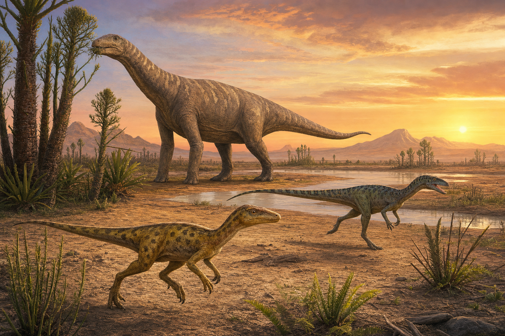
When Dinosaurs Were New
A Triassic Period Story

A Triassic Period Story
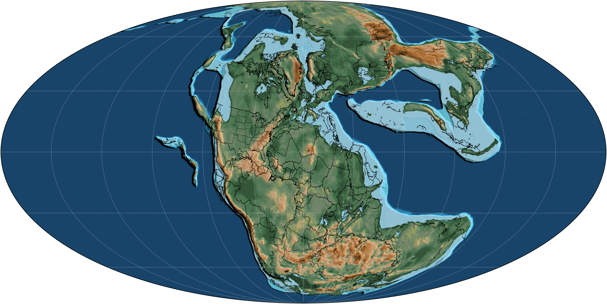
Long before T. rex, the world had a dinosaur beginning. The Triassic Period started about 251.9 million years ago and came before the Jurassic.
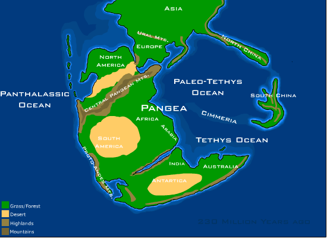
Back then, the continents were joined in one giant land called Pangaea. Much of it was hot and dry, with wide deserts and big seasonal changes.
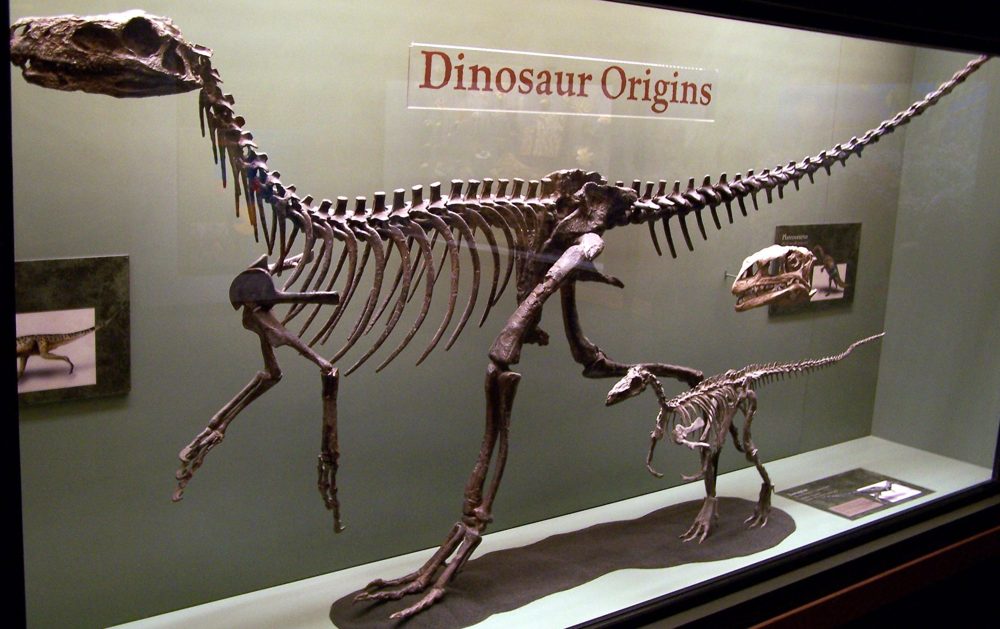
The first dinosaurs were not giant monsters. Many were small, quick animals with legs held under their bodies, ready to stand tall and move fast.
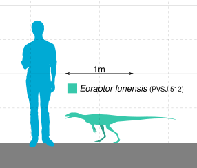
Meet Eoraptor, one of the earliest-known dinosaurs. It lived in what is now Argentina and was only about as long as a seven-year-old child is tall.
Fossils are clues from deep time. Eoraptor is known from a nearly complete skeleton, plus other pieces that help scientists rebuild its story.
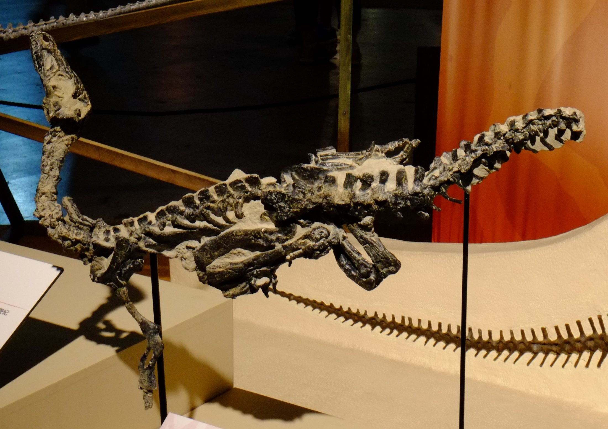
Some Triassic dinosaurs were hunters. Herrerasaurus had strong running legs, a balancing tail, and sharp teeth for eating meat.
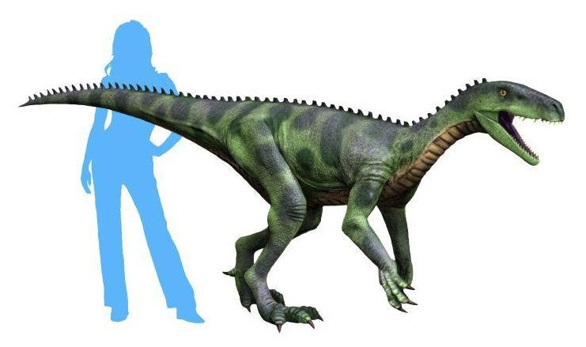
Herrerasaurus looked fierce, but it was still part of an early dinosaur world. Dinosaurs were sharing the land with many other reptiles and mammal relatives.
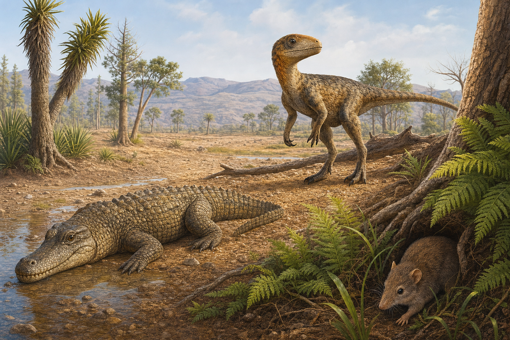
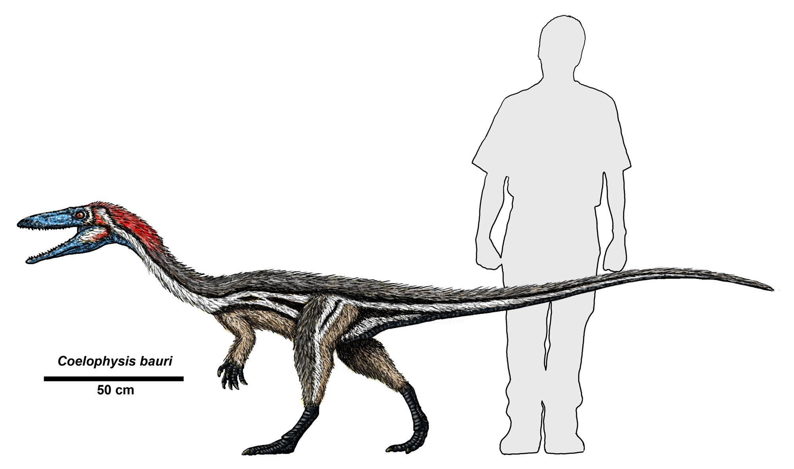
Coelophysis was another speedy meat-eater. It lived later in the Triassic in what is now the southwestern United States.
At Ghost Ranch in New Mexico, scientists found hundreds of Coelophysis skeletons. One quarry became a famous window into Triassic life.
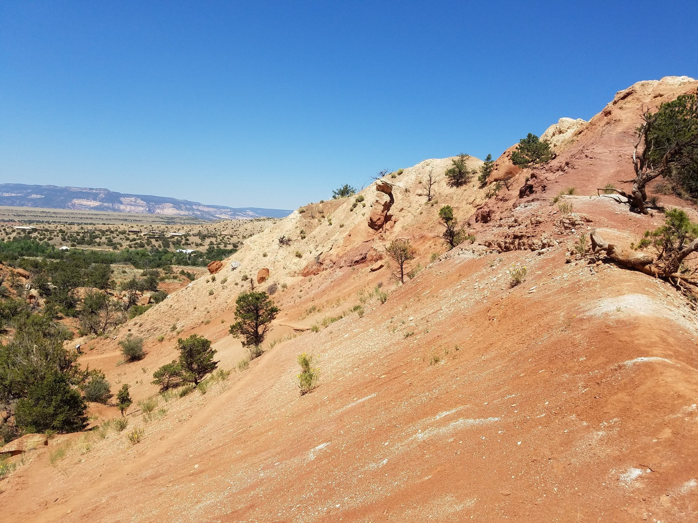
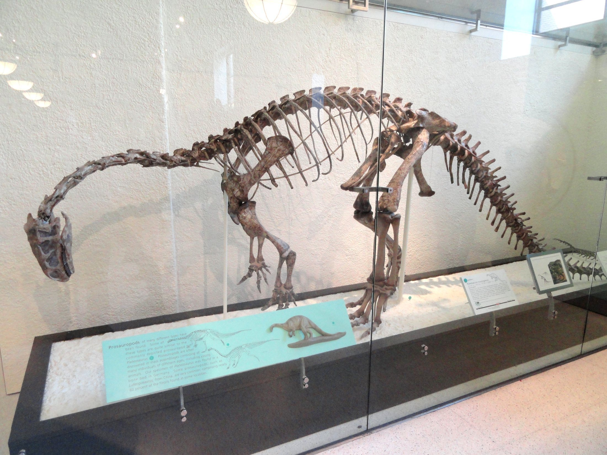
Not every Triassic dinosaur chased prey. Plateosaurus had a long neck, a small head, and leaf-shaped teeth for crushing plants.
The Triassic ended with a huge extinction. Many reptile groups disappeared, but dinosaurs survived. In the Jurassic, they spread into more places and became the biggest land animals around.
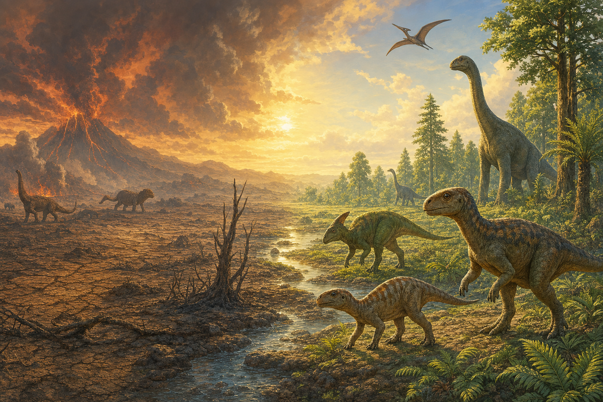